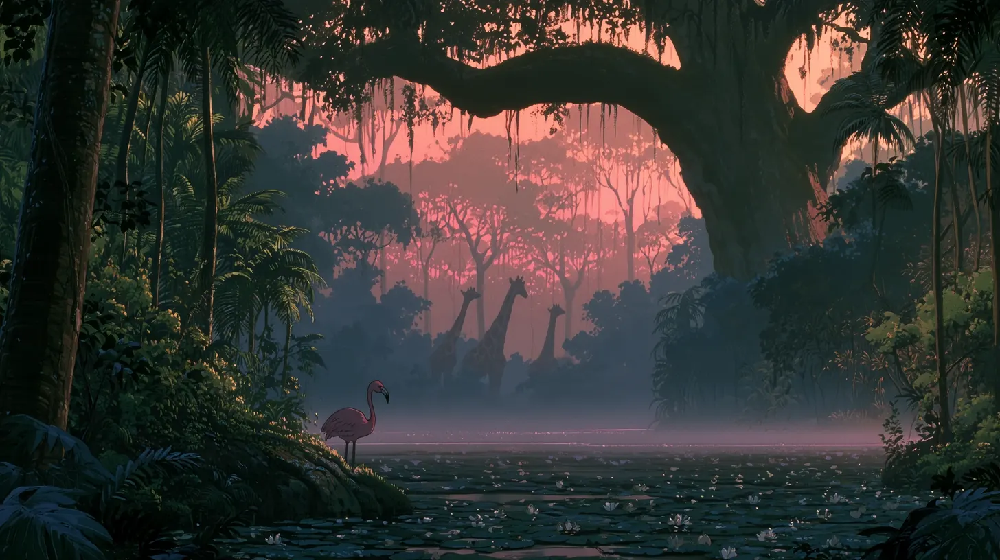
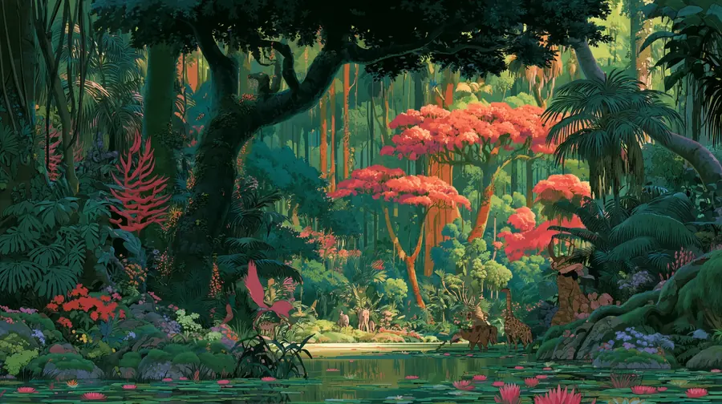
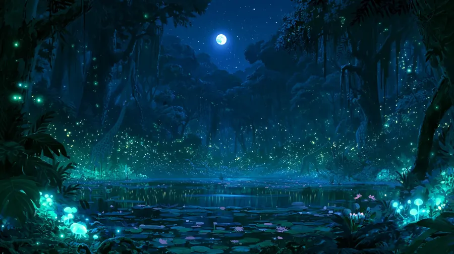

第一章 · 05:40
夜明け
Aube
La brume se lève sur le bassin. Un flamant guette le premier rayon, les girafes sortent du rose.
一日 / Un jour dans la jungle
00 / 04

第一章 · 05:40
Aube
La brume se lève sur le bassin. Un flamant guette le premier rayon, les girafes sortent du rose.
第二章 · 12:00
Midi
Le soleil tombe à pic. Les flamboyants s'embrasent, la canopée bourdonne, l'eau garde la fraîcheur.
第三章 · 18:30
Crépuscule
Contre-jour. Tout devient silhouette, l'étang avale le soleil et le renvoie en or.
第四章 · 23:50
Nuit
La lune prend le relais. Les lucioles s'allument une à une, les champignons respirent en bleu.
密林は眠らない — Manifeste
La jungle ne dort jamais. Elle change seulement de couleur — du rose de l'aube au bleu des lucioles, en passant par le feu de midi et l'or du soir.
Quatre lumières, une seule jungle. Survole pour ouvrir.

